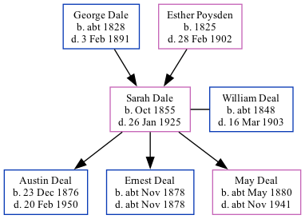

Sarah Ann Deal (née Dale) 1855 - 1925
[ Home ] | [ Calendar ] | [ Surnames Index ] | [ Family History ]A caretaker of bridge union workhouse and the daughter of George Dale (an agricultural laborer) and Esther Poysden (a servant)Sarah Dale, the great-great-aunt of Nigel Horne, was born in Chartham, Kent, England in Oct 18551,2,3,4,5,6,7,8, was baptized there at St Mary on Dec 2, 1855 and also married William Deal (a bailiff asylum farm with whom she had 3 children: Austin Alfred, Ernest and May) there at St Mary's Church, on Nov 11, 187510.
Sarah spent all of her life in Kent, England. Throughout her life, she lived in several places around the county: in Chartham Hatch, Kent, England on Apr 7, 186111; at 1 Dane John Grove, Canterbury in 18712; at Asylum Farm Cottages in Chartham on Apr 3, 188114; at Asylum Cottages in Chartham in 18914 and on Apr 5, 189113; at 14 Asylum Cottages in Chartham on Mar 31, 190112; and at Union Road, Bridge on Apr 2, 19116 following the death of her husband on Mar 16, 1903.
She died on Jan 26, 1925 in Chartham7,9.
Parents
- George was born c. 1828
- Esther was born in 1825
Children
- Austin Alfred was born on Dec 23, 1876
- Ernest was born c. Nov 1878
- May was born c. May 1880
Citations
- 1861 England Census Online publication - Provo, UT, USA: The Generations Network, Inc., 2005.Original data - Census Returns of England and Wales, 1861. Kew, Surrey, England: The National Archives of the UK (TNA): Public Record Office (PRO), 1861. Data imaged from the National
- 1871 England Census Online publication - Provo, UT, USA: The Generations Network, Inc., 2004.Original data - Census Returns of England and Wales, 1871. Kew, Surrey, England: The National Archives of the UK (TNA): Public Record Office (PRO), 1871. Data imaged from the National
- 1881 England Census Online publication - Provo, UT, USA: The Generations Network, Inc., 2004. 1881 British Isles Census Index provided by The Church of Jesus Christ of Latter-day Saints © Copyright 1999 Intellectual Reserve, Inc. All rights reserved. All use is subject to the
- 1891 England Census Online publication - Provo, UT, USA: The Generations Network, Inc., 2005.Original data - Census Returns of England and Wales, 1891. Kew, Surrey, England: The National Archives of the UK (TNA): Public Record Office (PRO), 1891. Data imaged from The National
- 1901 England Census Online publication - Provo, UT, USA: The Generations Network, Inc., 2005.Original data - Census Returns of England and Wales, 1901. Kew, Surrey, England: The National Archives of the UK (TNA): Public Record Office (PRO), 1901. Data imaged from the National
- 1911 England Census Online publication - Provo, UT, USA: Ancestry.com Operations, Inc., 2011.Original data - Census Returns of England and Wales, 1911. Kew, Surrey, England: The National Archives of the UK (TNA), 1911. Data imaged from the National Archives, London, England.
- England & Wales, Death Index: 1984-2005 Online publication - Provo, UT, USA: The Generations Network, Inc., 2007.Original data - General Register Office. England and Wales Civil Registration Indexes. London, England: General Register Office. © Crown copyright. Published by permission of the Cont
- England & Wales, FreeBMD Birth Index, 1837-1915 Online publication - Provo, UT, USA: The Generations Network, Inc., 2006.Original data - General Register Office. England and Wales Civil Registration Indexes. London, England: General Register Office. © Crown copyright. Published by permission of the Cont
- England & Wales, National Probate Calendar (Index of Wills and Administrations),1861-1941 Online publication - Provo, UT, USA: Ancestry.com Operations Inc, 2010.Original data - Principal Probate Registry. Calendar of the Grants of Probate and Letters of Administration made in the Probate Registries of the High Court of Justice in England. Londo
- England Marriages 1538-1973 - Findmypast
- 1861 England, Wales & Scotland Census - Findmypast (was age 5 and the daughter of the head of the household)
- 1901 England, Wales & Scotland Census - Findmypast (was age 45 and the wife of the head of the household)
- 1891 England, Wales & Scotland Census - Findmypast (was age 55 and the wife of the head of the household)
- 1881 England, Wales & Scotland Census - Findmypast (was age 25 and the wife of the head of the household)
Media
Canterbury Journal, Kentish Times 25 March 1905

England & Wales births 1837-2006 Transcription - BMD-B-1855-4-CJ-000203-041
1861 England, Wales & Scotland Census Transcription - GBC-1861-0003417885
England & Wales marriages 1837-2008 Transcription - BMD-M-1875-4-AZ-000078-251
England Marriages 1538-1973 Transcription - R_848405020-2
Kent, Canterbury Archdeaconry marriages 1538-1928 - GBPRS/CANT/M/97244480/2
England & Wales deaths 1837-2007 - BMD/D/1925/1/AZ/000257/079
England Marriages 1538-1973 - R_848404650/2
England Births & Baptisms 1538-1975 - R_885423731
England Births & Baptisms 1538-1975 - R_938199570
Kent Baptisms - GBPRS/CANT/B/96193184
1901 England, Wales & Scotland Census - GBC/1901/0005460908
Family Tree
Generated by ged2site. Last updated on Nov 13, 2024